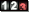

Exporters
Exporters Extensions
Extensions Interface
Interface Chowdren
Chowdren ClickStore
ClickStore Bug Tracker
Bug Tracker| |
This is an archive. |
| See the new ClickWiki at https://clickwiki.net. This version is just an archive for the purposes of migrating content to the new structure. |
Counter
|  | |
| Author | |
| Status | Released |
| Release Date | Unknown |
| Available for | Not yet documented |
| Supported Runtimes | |
| License | Free |
| Download | |
|---|---|
| Includes Examples | Yes |
| Includes Help Files | Yes |
| Links | Included by default. |
{kind=link}
The Counter object stores the numbers in your application and is used for things like fuel gauges, speedometers, or the read-outs from dials in the cockpit of a spaceship. The Counter object can be displayed as an animation or a simple number. You can also display your counters as horizontal or vertical bars and use them as energy bars in games or basic bar charts in presentations. Counters can also be hidden in the background for use in your own calculations.
Contents
Properties
Value
Initial value
Enter the value to copy in the counter when the frame starts.
Minimum value
Contains the minimal value of the counter: the counter will never go under this value.
Maximum value
Contains the maximum value of the counter: the counter will never go past this value.
Integer values
Fixed number of digits
The Fixed Number of Digits option allows you to specify the number of digits displayed on the screen if the counter contains an integer value. If the real number of digits is lower than this number, then 0's are added to the left. If the real number of digits is greater than this number, the higher digits are not displayed.
Floating point values
These properties allow you to format the display of floating point values.
Number of significant digits
Allows you to specify the total number of digits you would like to display. If there are too many digits before the decimal point, the number is displayed in scientific format (e.g. 1.2e+015). If there are too many digits after the decimal point, they are rounded. For example with N = 2: 123456 will be displayed as "1.2e+015", 1.23456 will be displayed as "1.2". Note: the double floating point values used by Clickteam Fusion 2.5 can contain up to 16 significant digits.
Number of digits after decimal point
Allows you to specify the number of digits after the decimal point. Note: in this case, the number is never displayed in scientific (X.YYYe+ZZZ) format. If the number of significant digits is too small, then the maximum value is displayed (99~99.99~).
Add 0's to the left
If the option above is selected and the real number of digits is lower than the total number of significant digits mentioned above, then 0's are added to the left.
Display
Type
This combo box contains five choices to define the aspect of your counter.
- Hidden: The counter will not be shown on the screen. But it will be present and available for calculations.
- Numbers: The counter is displayed as a number. In this case, a click on the EDIT button opens the picture editor for you to edit the bitmap font used by the object. In the Picture editor, select the Import Font button in the settings of the Text tool to import all the images from a font.
- Vertical bar: The counter is displayed as a vertical bar. In this case, the minimum and maximum values are fundamental as they define the progression of the display depending on the value. If you choose this option, further properties are displayed:
- Count
- Up: the bar will grow toward the top as the value increases.
- Down: the bar will grow downward as the value increases.
- Fill type
- Solid color: displays the bar with a single color. You can choose the color with the next property "Color"
- Gradient: displays the bar as a gradient of color. In this case, you can define the two colors to use with the two next properties "Color" and "Color 2". The last property, vertical gradient allows you to display the gradient vertically.
- Count
- Horizontal bar: The counter is displayed as a horizontal bar. In this case, the minimum and maximum values are fundamental as they define the progression of the display depending on the value. If you choose this option, further properties are displayed:
- Count
- Right: the bar will grow toward the right as the value increases.
- Left: the bar will grow toward the left as the value increases.
- Fill type
- Solid color: displays the bar with a single color. You can choose the color with the next property "Color"
- Gradient: displays the bar as a gradient of color. In this case, you can define the two colors to use with the two next properties "Color" and "Color 2". The last property, vertical gradient allows you to display the gradient vertically.
- Count
- Animation: If you choose this option, the counter will be displayed using an animation. Click on the EDIT button to open the animation editor.
- Text: If you choose this option, the counter will be displayed as a text. You can modify the text font and style in the Text Properties tab.
Conditions
Compare The Counter To A Value
The Compare The Counter To A Value condition compares the value of the counter to another value, and is true if the comparison is true.
Actions
Set Counter
The Set Counter action changes the value of the counter to another value.
Add To Counter
The Add To Counter action adds a value or a variable retrieved from another object to the current value of the counter.
Subtract From Counter
The Subtract From Counter action subtracts a value from the current value of the counter.
Set Minimum Value
Changes the minimum value of the counter. Updates the value of the counter if necessary.
Set Maximum Value
Changes the maximum value of the counter. Updates the value of the counter if necessary.
Bars
Set Color
This action changes the color of counters displayed as a vertical or horizontal bar. If the bar is filled with a gradient, this action changes the first color.
Set Color #2
This action changes the second color of counters displayed as a vertical or horizontal bar when the bar is filled with a gradient.
Expressions
Current Value
value( "Counter" )
Retrieves the current value in the Counter object.
Minimum Value
minvalue( "Counter" )
Retrieves the minimum value of the Counter object.
Maximum Value
maxvalue( "Counter" )
Retrieves the maximum value of the Counter object.
Color
cColor( "Counter" )
Retrieves the color of counters displayed as a vertical or horizontal bar. If the bar is filled with a gradient, this function returns the first color.
Color #2
cColor2( "Counter" )
Retrieves the second color of counters displayed as a vertical or horizontal bar when the bar is filled with a gradient.